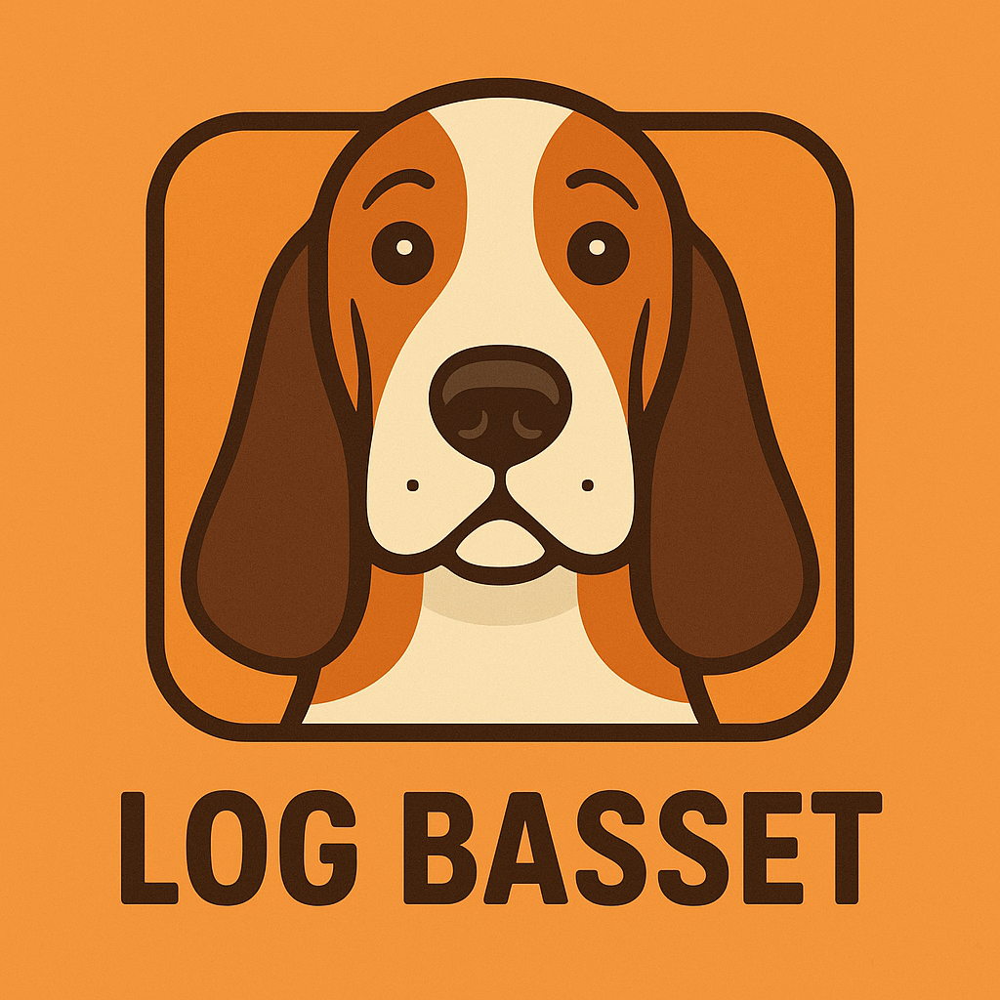

Introduction
At work, we use Scalyr to access our logs. They provide a web interface and a client written in Python, but it hasn’t been updated in the last couple of years, and I’m not sure if it’s abandoned.
As CLI coding agents become more popular, it’s important to have reliable CLI tools for accessing various services.
Log Basset is a CLI tool for accessing Scalyr logs, written from scratch in Go.
Why Log Basset?
There are a few reasons why I decided to rewrite their tool in Go:
- I wanted to have fun 🙂
- A tool written in Go is easier to distribute and use (no need to set up a virtual environment)
- I was curious to stress test OpenCode and
sonnet-4
Yes, this tool was mostly written using AI tools. If that’s a problem for you, please do not use it.
Key Features
Log Basset maintains most of the original features, but I focused on the “read-only” ones. In particular, you can:
- query: Retrieve log data
- power-query: Execute PowerQuery
- numeric-query: Retrieve numeric/graph data
- facet-query: Retrieve common values for a field
- timeseries-query: Retrieve numeric/graph data from a timeseries
- tail: Provide a live ’tail’ of a log
Compared to the original version, it also offers:
- Flexible time formats and output types
- Strong input validation
- Multi-layer configuration
- Cross-platform support and high performance
Installation
You can either use one of the packages from the GitHub release page or:
Homebrew (macOS/Linux)
|
|
From Source
|
|
Usage Examples
Once you have set your API key like this:
|
|
You can query logs like this:
|
|
Or tail them:
|
|
A complete guide is available in the project readme.
Conclusion
Log Basset is my attempt to make working with Scalyr logs a bit easier and more enjoyable. If you give it a try and have feedback or ideas, let me know—or even better, open an issue or PR on GitHub!